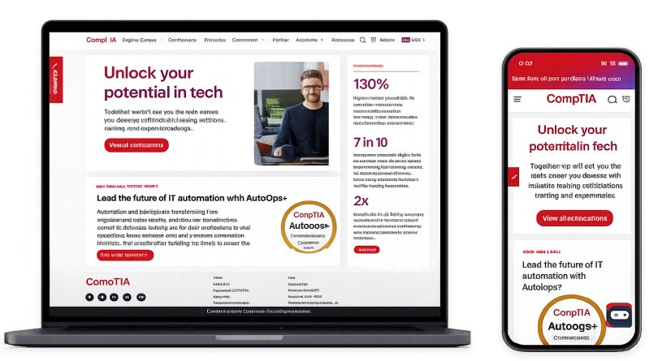
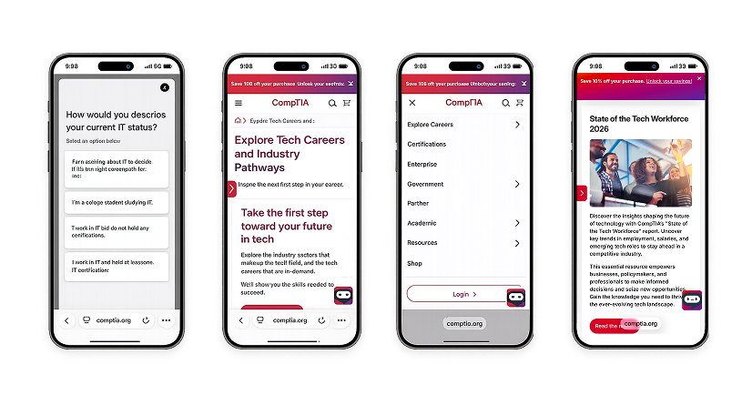
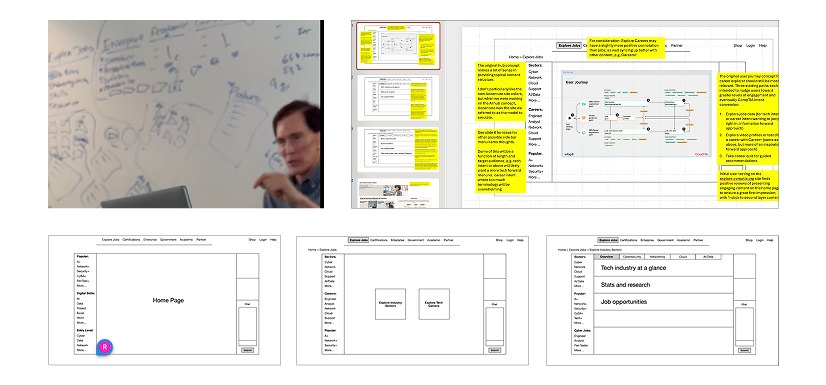
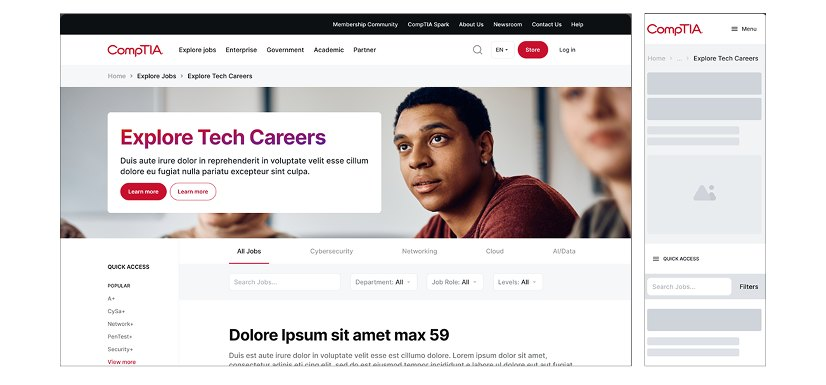

CompTIA · Learning platform
An editorial answer
to a technical
category.
A large-scale learning platform transformation, rescued mid-flight and rebuilt around an editorial direction that broke from every convention in IT certification.

The challenge
A stalled transformation, and a vision that only existed on a whiteboard.
We joined as a development partner. As the design problems surfaced, I embedded with CompTIA’s team — then we took over the design work entirely.
01 · Interpreting the vision
Turning sketches into a direction the whole team could build against.
The CEO had a clear instinct for what the experience should feel like. Our job was to make it concrete, defensible and buildable.
Board 01 Vision → principles → direction
Representative reconstruction of the working boards from this engagement.
02 · Structure
Editorial rhythm, applied to a learning product.
Pacing and hierarchy explored in grayscale — long-form modules, pathway browsing, and the certification detail view.

03 · The system
A framework built to grow after we left.
Components, tokens and documentation that let CompTIA keep extending the platform without re-litigating the direction.
Palette
Editorial red · near-black · paper
Type scale
Careers
Body copy at a readable measure
Label / meta / 12px
States
Core components
Representative reconstruction of the pattern set.


Impact
What began as development support grew into strategy, experience, design delivery and cross-functional alignment across the initiative.

Next project
ADM —
global nutrition, unified.